1. Mazo de Gigante Eléctrico + Fénix (Meta 2025)

El mazo más dominante del 2025: control, presión constante y defensa sólida contra aéreo. Combinado con el Fénix y el Tornado, crea un push casi imparable.

Mazos, guías y novedades de Clash Royale
RoyaleLeaks es tu portal con los mejores mazos del meta, estrategias para subir copas y novedades oficiales de Clash Royale 2025.
Analizamos mazos de top global, jugadores profesionales, torneos y estadísticas oficiales para traerte la información más precisa.
El mazo más dominante del 2025: control, presión constante y defensa sólida contra aéreo. Combinado con el Fénix y el Tornado, crea un push casi imparable.

Rápido, barato y perfecto para subir copas. La clave es ciclar el Minero constantemente mientras defiendes con Valkiria, Bombardero y Tronco.
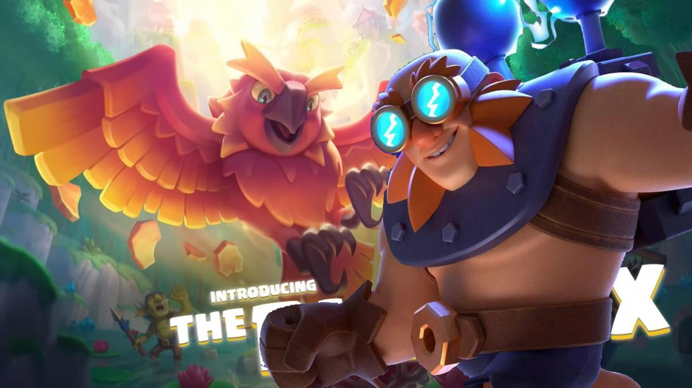
Este mazo de costo $3.8$ de Elixir ha dominado el meta de 2025 gracias a su capacidad de **controlar el carril** con el Tornado y defender unidades aéreas clave con el Fénix.
| Categoría | Cartas del Mazo | Coste |
|---|---|---|
| Condición de Victoria | **Gigante Eléctrico** | 8 |
| Defensa Aérea | **Fénix** | 4 |
| Defensa Estructural | **Tornado** | 3 |
| Hechizos | **Rayo** | 6 |
Fase de Inicio: Busca activar la Torre del Rey usando el Tornado. Cicla en defensa con Espíritu de Hielo. Fase de Ataque: Juega el Gigante Eléctrico desde atrás y apóyalo con el Rayo para eliminar defensas.
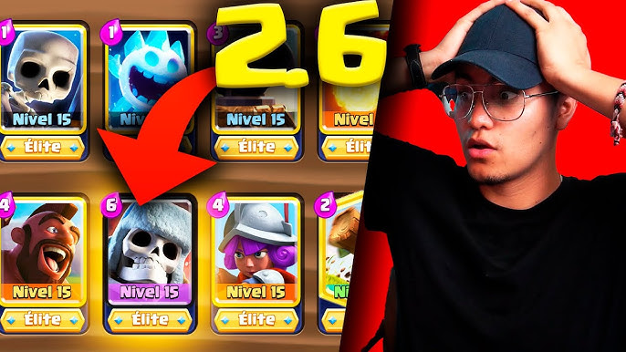
El ciclo rápido por excelencia. Juega el Montapuercos hasta **tres veces** por cada jugada pesada del rival.
| Carta | Función |
|---|---|
| **Montapuercos** | Daño a Torre |
| **Mosquetera** | Defensa Principal |
| **Cañón** | Distracción |
| **Bola de Fuego** | Hechizo Fuerte |
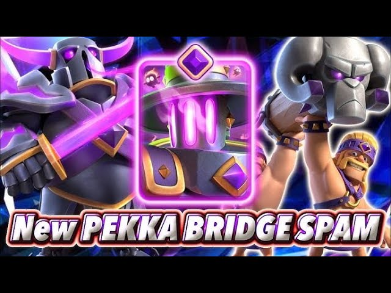
El *counter* natural a los Tanques pesados. Defiende con P.E.K.K.A y contraataca rápido con Ariete y Bandida.
Clave: Nunca uses el P.E.K.K.A ofensivamente al inicio. Úsalo para matar al tanque rival y luego apóyalo en el contraataque.
El mazo *Log Bait* ($3.3$ Elixir) fuerza al rival a gastar su Tronco para luego castigar con el Barril de Duendes.
Ataque por Fases: Inicia con Princesa en el puente. Si gastan Tronco, lanza el Barril a la torre.
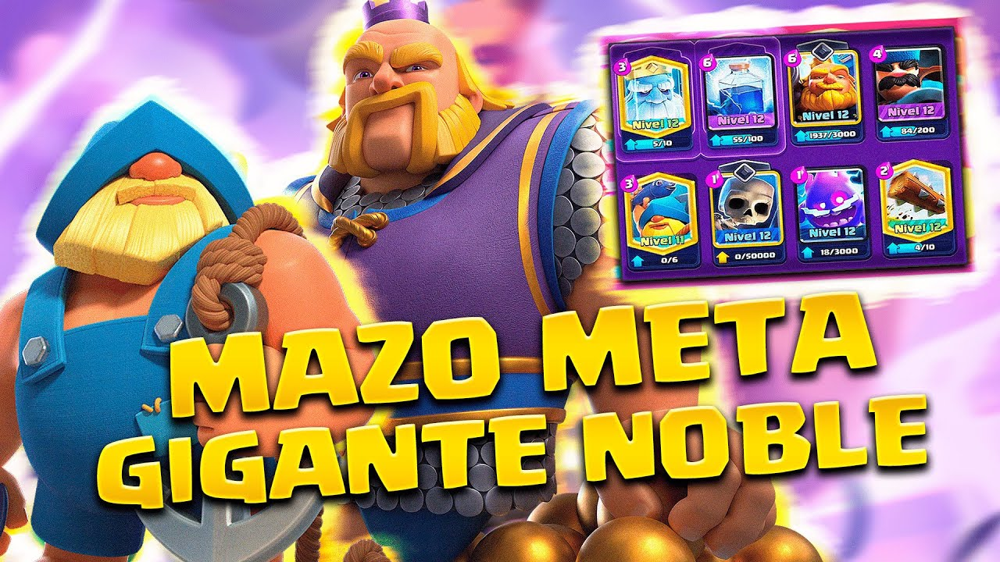
El **Gigante Noble** ataca desde lejos. Usa la **Pescadora** para atraer tanques rivales y activar tu torre del rey.
Usa el **Rompemuros** por el otro carril cuando el rival gaste elixir defendiendo al Gigante Noble.
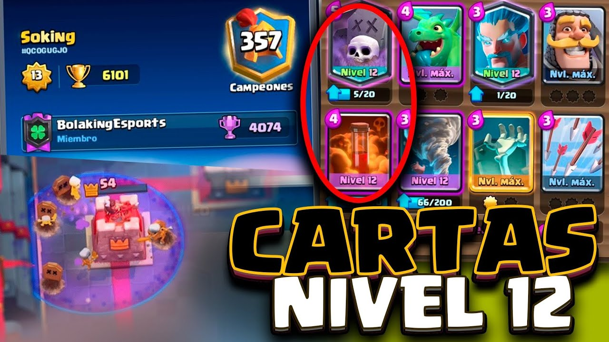
Arquetipo de **Control**. Defiende, sobrevive y lanza el Cementerio con un tanque (Caballero) cuando el rival tenga poco elixir.
El **Veneno** es obligatorio para matar a los esqueletos o esbirros que intenten defender tu Cementerio.
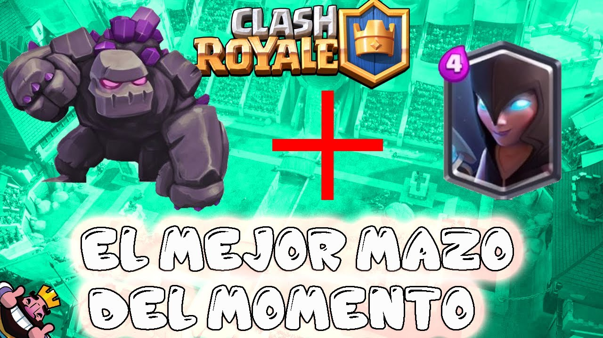
El arquetipo *Beatdown* definitivo. Ignora el daño pequeño y construye un ataque imparable en x2 de Elixir.
Estrategia: Juega Golem atrás del rey. Acumula Bruja Nocturna y Dragón detrás. Usa Rayo para eliminar la Torre Infernal.
El mazo de daño masivo. Sparky elimina tanques terrestres de un disparo. Usa la Montacarneros para frenar globos o montapuercos.
Controla el puente. Protege tu Ballesta con Caballero y Arqueras. Gana la partida defendiendo y lanzando Bolas de Fuego a la torre.

Aprende a rotar tu win condition antes que el rival. Tu objetivo es lanzar tu Montapuercos cuando el rival aún no tiene su Cañón en mano.
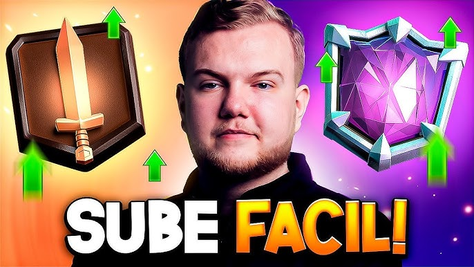
No cambies de mazo constantemente. Domina uno solo. Aprende a contar el elixir del rival (si gasta 7 en P.E.K.K.A y tú defiendes con 3, tienes +4 de ventaja).
El Atractor Central: Coloca estructuras 4 cuadros adelante del Rey y 3 al lado para máxima distracción.
Anti-Rayo: Nunca pongas tu Mosquetera o Mago pegado a la torre si el rival tiene Rayo.

La clave es **separar el tanque del soporte**. Usa Valkiria para matar a la Bruja/Mago detrás del Golem, mientras tu Torre Infernal derrite al Golem.
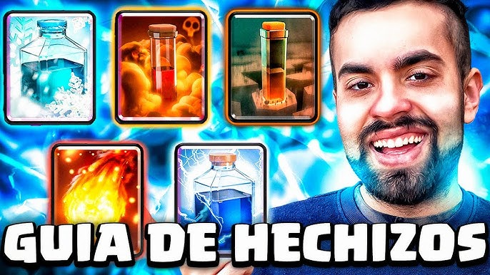
Valor: No uses Bola de Fuego solo en una Princesa. Espera a que el rival ponga algo más cerca de ella.
Finisher: Memoriza el daño de tus hechizos a torre para saber cuándo puedes ganar la partida solo ciclando hechizos.
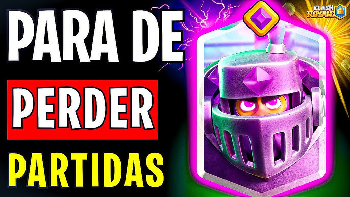
| Rival | Estrategia |
|---|---|
| **Golem** | Ataca el otro carril fuerte. |
| **Log Bait** | Guarda tu Tronco para el Barril. |
| **Ballesta** | Usa tu tanque en el centro para distraerla. |
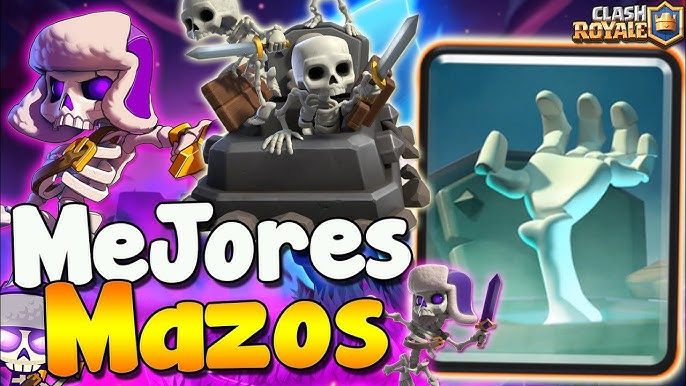
La **Jaula del Forzudo** es excelente porque al romperse, el Forzudo contraataca. La **Lápida** es el mejor counter para P.E.K.K.A y Príncipe por la generación de esqueletos.
Si el rival gasta 8 de elixir en un Golem atrás, tienes vía libre para atacar con todo por el otro carril y tomar la torre antes de que su Golem llegue al puente.
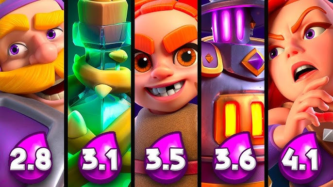
Las cartas más usadas por profesionales en este momento son: Fénix, Tornado, Minero y Caballero Dorado.
¿Dudas o sugerencias?
soporte@royaleleaks.comEn RoyaleLeaks, la privacidad de nuestros visitantes es de extrema importancia. Este documento de política de privacidad describe los tipos de información personal que recibe y recopila RoyaleLeaks y cómo se utiliza.
Archivos de registro: Al igual que muchos otros sitios web, RoyaleLeaks hace uso de archivos de registro. La información dentro de los archivos de registro incluye direcciones de protocolo de internet (IP), tipo de navegador, proveedor de servicios de internet (ISP), fecha y hora, páginas de referencia/salida y número de clics para analizar tendencias, administrar el sitio y recopilar información demográfica. Las direcciones IP y otra información similar no están vinculadas a ninguna información que sea personalmente identificable.
Cookies y Web Beacons: RoyaleLeaks utiliza cookies para almacenar información sobre las preferencias de los visitantes y registrar información específica del usuario sobre las páginas a las que el usuario accede o visita.
Cookie de Google DoubleClick DART:
Este contenido no está afiliado, respaldado, patrocinado ni aprobado específicamente por Supercell y Supercell no es responsable del mismo. Para obtener más información, consulte la Política de contenidos de fans de Supercell: https://supercell.com/en/fan-content-policy/.
Todas las imágenes de cartas, personajes y logotipos de Clash Royale son propiedad intelectual de Supercell. Este sitio web es una guía educativa y de estrategia creada por fans para fans.
Si necesita más información o tiene alguna pregunta sobre nuestra política de privacidad, no dude en contactarnos por correo electrónico a: soporte@royaleleaks.com